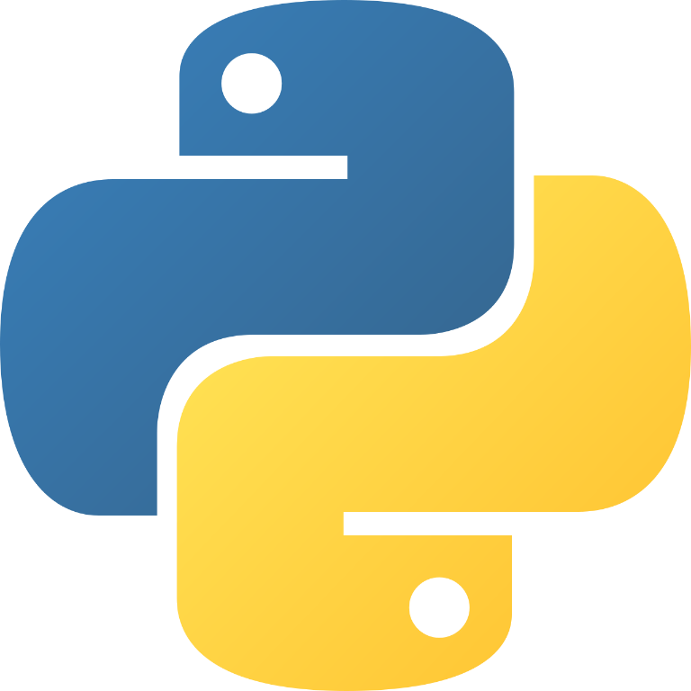
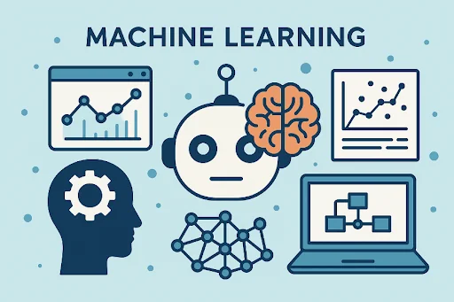
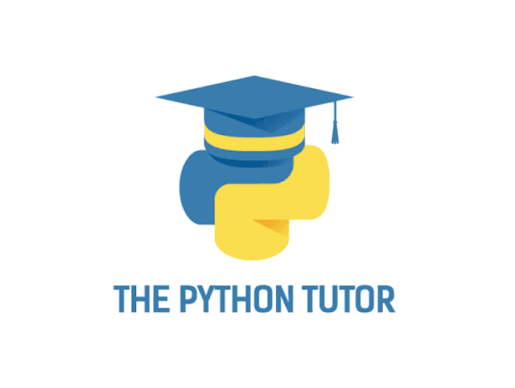
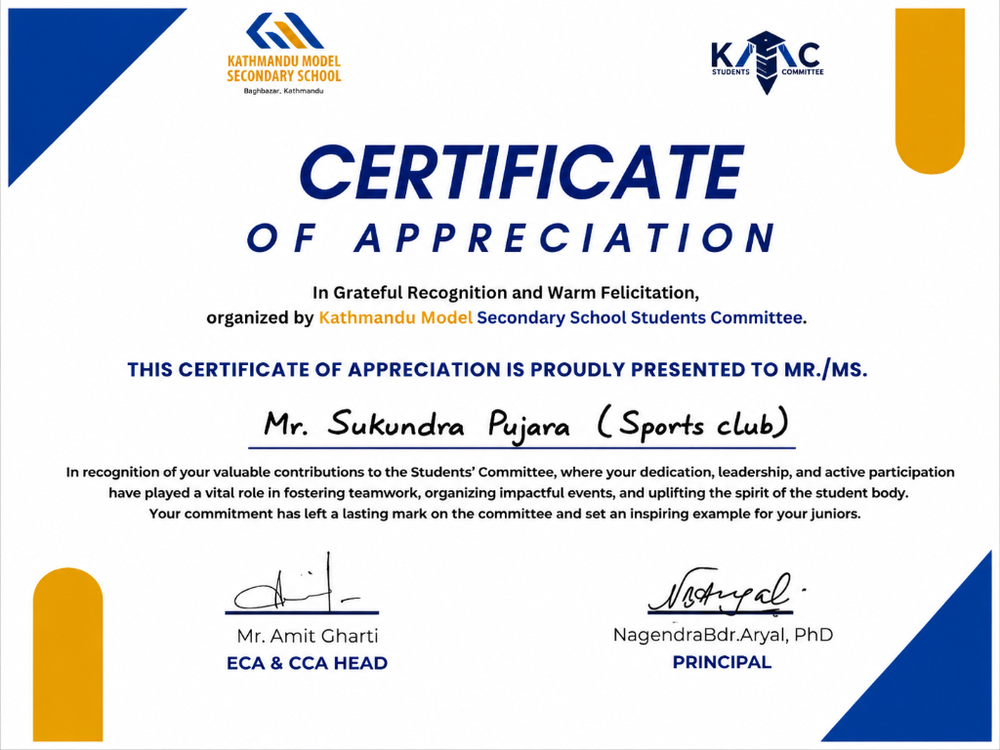
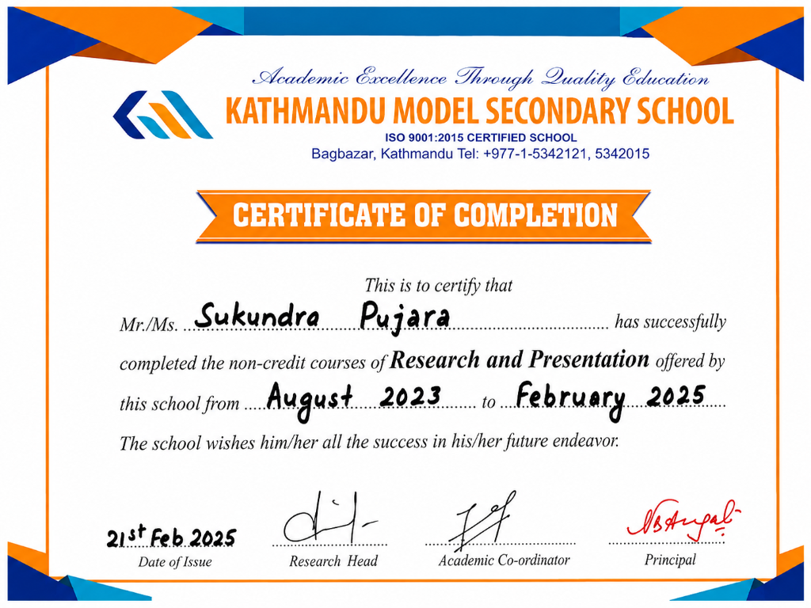
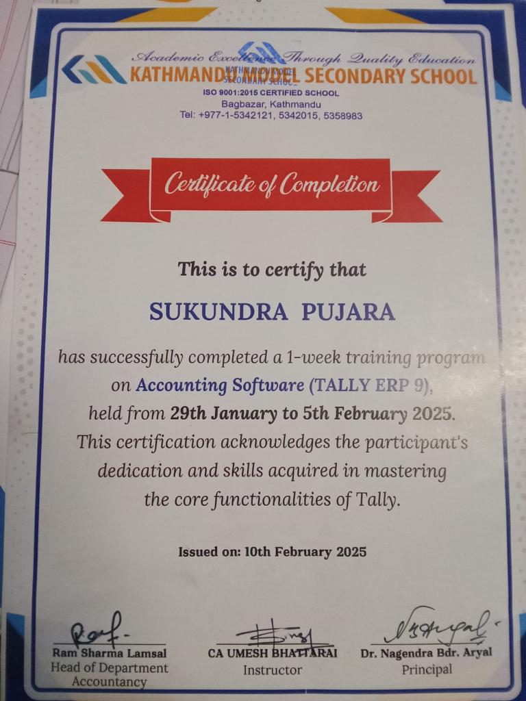

Python
My main programming language for practice and projects.
I'm passionate about Python programming, web development, Artificial Intelligence, and Machine Learning. I enjoy building practical projects, solving problems, and exploring new technologies.
A little about who I am and what I love learning.
Hello! I'm Sukundra Pujara, a Computer Science with Artificial Intelligence student at Softwarica College of IT and E-Commerce, in collaboration with Coventry University, UK.
Python is my main programming language, and I am continuously improving my skills in web development, databases, and machine learning. I believe in learning by doing, building practical projects, and sharing knowledge.
I enjoy tutoring beginners, explaining programming concepts simply, and helping others learn technology step by step. I am interested in internship opportunities where I can collaborate, gain practical experience, and grow my technical and problem-solving skills.
My goal is to become a skilled software developer and AI professional. Consistency, curiosity, teamwork, and hands-on practice are the keys to growing as a developer.
Technologies and topics I am learning and practicing.

My main programming language for practice and projects.
HTML, CSS, and JavaScript for responsive web experiences.
Exploring artificial intelligence and its real-world uses.

I am currently making progress in learning Machine Learning.
Learning database fundamentals and data organization.

Helping beginners understand programming step by step.
Here are some of the projects I have worked on. More projects will be added soon.
Building a foundation for a future in software and AI.
Softwarica College of IT and E-Commerce · In collaboration with Coventry University, UK
Recognition, school involvement, and learning achievements.

Sports Club · Kathmandu Model Secondary School Students Committee
View Certificate ↗

One-week training program · Kathmandu Model Secondary School · February 2025
View Certificate ↗Study Python from your first print statement to advanced concepts.
Python Notes: Basic to Advanced includes a searchable curriculum, practical examples, lesson-by-lesson progress, and practice challenges.
Start learning Python →